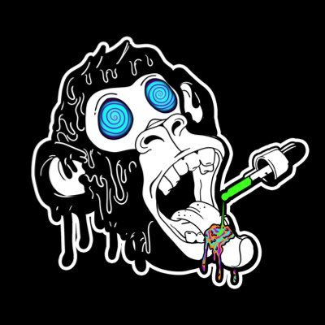

THE TEAM
behind every project, whether amazing or not, there's always a team. Ladies and gentlemen, I present to you, the team of our beloved Tribe.

LYSERGIC.S◎L {C̶U̶L̶T̶}
DANNY DEVITOKEN.S◎L {C̶U̶L̶T̶}
king kulbik {C̶U̶L̶T̶}
fenrus.sol {C̶U̶L̶T̶}
Fig
Mr Hankey {C̶U̶L̶T̶}